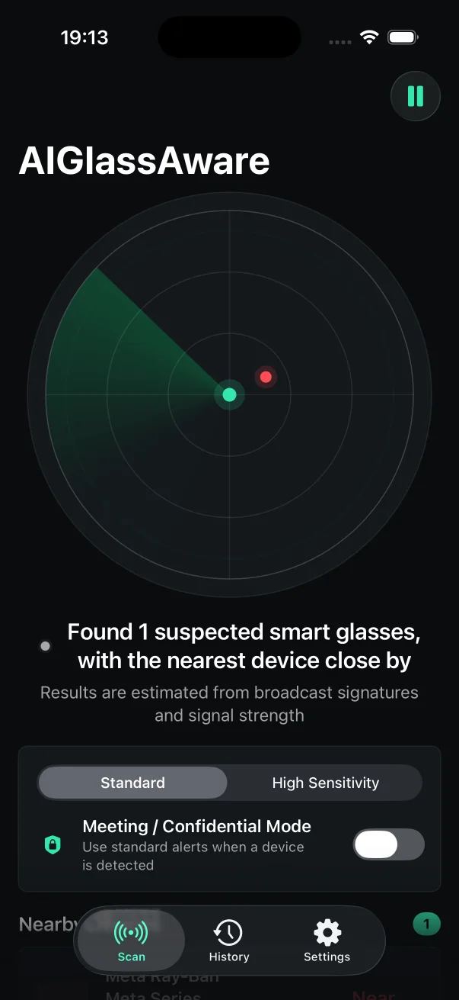
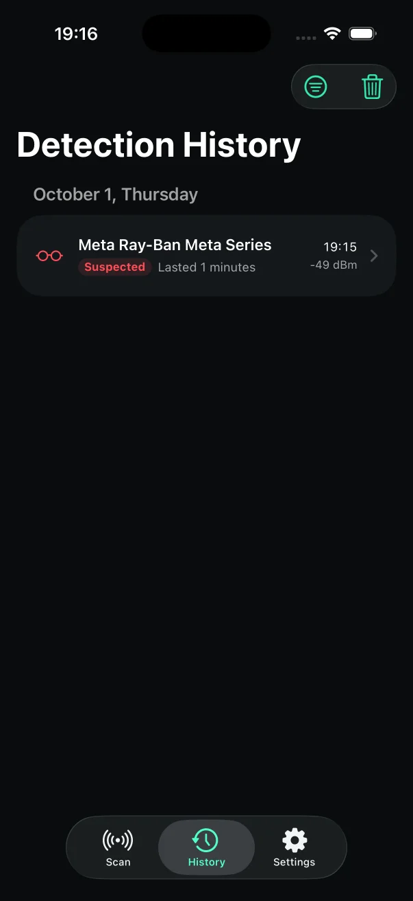
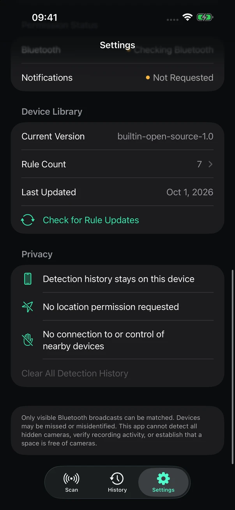

01
Live proximity awareness实时距离感知
A simple radar view combines known broadcast fingerprints and signal strength to surface supported nearby devices.简洁的雷达视图结合已知广播指纹与信号强度，提示附近可能存在的已支持设备。
Notice signals associated with nearby smart glasses before a sensitive conversation begins. 在敏感谈话开始前，留意附近可能与智能眼镜相关的蓝牙信号。
AIGlassAware analyzes Bluetooth broadcasts on your iPhone and keeps detection history on the device. No account. No location permission. No connection to nearby devices. AIGlassAware 在 iPhone 本地分析蓝牙广播，检测历史仅保存在设备中。无需账号，不请求定位，也不会连接附近设备。

Built for the moment you need it为重要时刻而设计
Use the live radar for a quick read, increase sensitivity when needed, and review what happened afterward.通过实时雷达快速了解周围情况，按需提高灵敏度，并在事后回看检测记录。
A simple radar view combines known broadcast fingerprints and signal strength to surface supported nearby devices.简洁的雷达视图结合已知广播指纹与信号强度，提示附近可能存在的已支持设备。
Use more prominent sound, haptic, and visual alerts when a conversation needs extra attention.当谈话需要格外谨慎时，启用更明显的声音、触觉与视觉提醒。
Choose Standard for fewer false positives or High Sensitivity for broader nearby-device discovery.标准模式减少误报；高灵敏度模式扩大附近设备的发现范围。
Review the device family, time, duration, and approximate signal strength. Clear the entire history at any time.查看设备系列、时间、持续时长与大致信号强度，并可随时清除全部历史。

How it works工作方式
With Bluetooth permission, the app reads advertisements visible while it is active in the foreground.获得蓝牙权限后，App 在前台运行时读取周围可见的广播。
Broadcast names, services, and manufacturer data are compared with on-device fingerprint rules.广播名称、服务标识与厂商数据会和设备内的指纹规则进行比对。
Signal strength provides a rough proximity estimate and can trigger an alert for a suspected match.信号强度用于粗略估算距离，并在疑似匹配时触发提醒。
Privacy by design隐私优先设计
AIGlassAware does not create an account, request location permission, connect to nearby devices, or automatically upload captured Bluetooth samples.AIGlassAware 不创建账号、不请求定位权限、不连接附近设备，也不会自动上传捕获的蓝牙样本。
Read the full privacy policy阅读完整隐私政策
Important limitation重要使用边界
Bluetooth identifiers may be shared by other products, and signal strength changes with walls, people, interference, and device power. Results should never be used to accuse anyone.其他产品可能使用相同蓝牙标识，墙体、人群、无线干扰与设备功率也会影响信号强度。请勿依据检测结果指责任何人。
FAQ常见问题
No. The app estimates whether a supported device may be nearby from Bluetooth broadcasts. It cannot read or verify a device's recording state.不能。App 只能根据蓝牙广播估算附近是否可能存在已支持设备，无法读取或验证设备的录制状态。
No. It passively reads visible Bluetooth advertisements and does not pair with, control, block, or interfere with nearby devices.不会。它只被动读取可见的蓝牙广播，不会配对、控制、阻断或干扰附近设备。
Bluetooth signatures can overlap across products, and radio signal strength is affected by the environment. High Sensitivity can discover more devices but may increase false positives.不同产品的蓝牙特征可能重叠，无线信号也会受到环境影响。高灵敏度模式能发现更多设备，同时也可能增加误报。
Detection history and preferences are stored locally on your iPhone and can be cleared in the app.检测历史与偏好设置保存在你的 iPhone 本地，并可在 App 内清除。
A calmer way to stay aware of nearby smart-glasses signals.更从容地感知附近可能存在的智能眼镜信号。